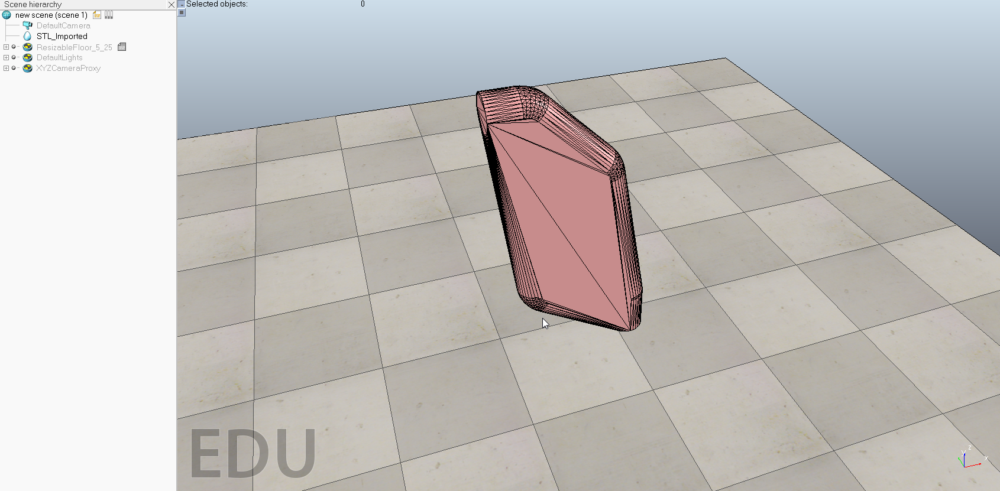

20190412 week8
40623201
第六周將 BubbleRob 操作後覺得對 V-rep 還是不熟悉，過程中發生三次錯誤找不出哪裡有錯誤，而重做了三次，因此這周將步驟整理成後錄成影片多熟悉一下。以下是模擬成功的檔案。
40623204
這週開始模擬 V-rep ，中間我遇到一些問題，都是同組的組員教我的或告訴我在哪裡。又因為是英文，所以我花了四堂課才把實習任務2老師給的東西翻譯完模擬出來。但在模擬的時候會出現一個東西，希望之後可以找到原因。下課後我幫一個同組也不太會的組員模擬，雖然有做出來，但是因為一些東西更改錯誤，所以影響最後模擬出來的結果，最後是請老師幫忙找錯誤，我才知道我主從設定錯誤而影響組員的東西不能正常移動，後來又發現我沒有把名字改對，所以不能跟程式中的名稱應對，才使得我第二次模擬出來的東西一直怪怪的，不能正常移動。


40623217
這周開始第三個的實習任務，當我看完裡面的tutorial雖然是了解他的目的是希望將物件可透過V-rep內部的CAD可接收的內建中轉入到V-rep，可是事實上他仍有限定的要求，因為當物件假定用stl的檔件丟入到V-rep的內部時進行轉換模擬，V-rep會將此圖檔轉換成好幾千甚至上萬的三角形，主要是方便做CAE方面的分析，可是當超過20000個上限時有可能造成無法啟動甚至是不給予支援也說不定，試著用Onshape畫出一張圖並試著用stl檔件轉入，目前可以弄出大概的雛形，只是tutorial後面似乎還有一些東西得用，剩餘的可能要等下星期再接續著做。
圖片如下:


tutorial connected:
http://www.coppeliarobotics.com/helpFiles/en/buildingAModelTutorial.htm
By the way: V-REP支持目前以下CAD數據格式：OBJ，STL，DXF，3DS（僅限Windows）和Collada。URDF也受支持，它不是純粹的基於網格的文件格式。
40623223
這禮拜明明早就可以把V-REP的練習做完的，可是不知道為什麼在最後一步出現錯誤，搞屁阿，然後去請教同學、上網查、之後還重做了一遍還是跳出錯誤，說什麼感測器參數錯誤?我明明就把程式碼原封不動的複製貼上!是會有什麼問題拉!唉.....下禮拜就是期中考，我看是做不完了
就是下面這個錯誤
就會向下面那樣撞車

還有就是期末的報告，我好像除了把每周的心得推上去以外好像沒做什麼其他有貢獻的事ㄟ，這是不是有點不太妙阿?
40623229
這週我將實習二的題目給完成了一開始做完發現當我按下執行的時候，球同時會往後仰這就奇怪了，也找不到原因感到莫名其妙，後來請教了同學以及老師，原來是東西裝相反了才會導致球往後跳，改正完以後球就可以正常運作了。
40623232
上週開始在研究bubbleRob，一開始我的球真的是直接閃掉，不誇張，因為我不太知道原因，所以我又再從頭再做一次，竟然這次就可以了，不過後面還是出現很多問題，最後透過同學的幫助。終於完成了最後的版本，太神拉 ! !
./../downloads/RubbleRob-40623232.zip
第二次完成版本
最終版本
40623242
上週開始在研究bubbleRob，在第七週中一直搞不定不知道為啥球會滾到不行，直接解體，繼續加油，終於在第七週禮拜日完成了，但是到上課的時候給同組的同學看完了，才知道原來離完成還有很多的問題，透過同學的幫助，終於完成了最終版本，太讚啦！
最初的
第一次完成版

最終完成版本！！！！(因為我擺放圓柱的距離差很多，故我將sensor調大)

40623243
第八週接近期中考，已將Bubble Rob大致上完成，而還有遇到與同學類似的問題，就是數據及物品狀態都已設定無誤，但是感測到牆壁有反應可是不會後退，還在尋找方法解決，其他部分都已完成，像是速度，鏡頭，各種外觀狀態設定等等，都是沒有問題的，到期中考之前，須將其他未完成的部分補齊，並給自評及組員互評，必須盡快完成
40623244
這週做的是如何將繪製好的組合圖在V-rep上建模，在Onshape上繪製好圖後，把檔案輸出成.stl，用V-rep打開檔案，但是在把組合件分開時，一直無法像說明當中那麼順利分開，失敗好多次，仍然不曉得錯在哪裡。後來跟同組組員討論後，才發現在組合零件時，不可以緊貼在一起，要有些許的縫隙，才能在V-rep中分成一件一件的零件。
Onsahpe圖檔：robotic manipulator
40623248
40423220
這週是第8週,經過老師講解協同產品設計流程的教育目標,網路的環境日新月異,進步的非常快,如果不能努力透過網路學習,很快就會落後於那些努力專研的人。並且使用v-rep去分解已經組裝好的零件,但是有點難度,並沒有完成。
20190405 week7 << Previous Next >> 20190419 week9